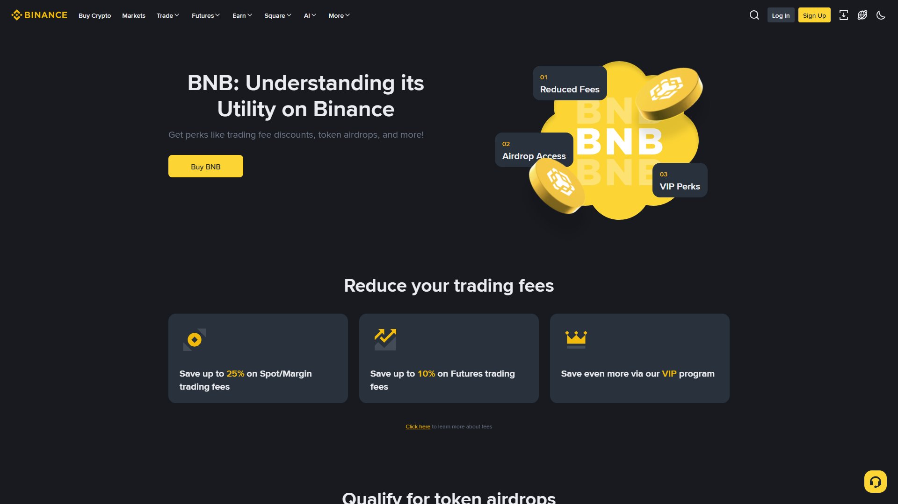

BNB بائننس کا اپنا ٹوکن ہے اور پوری بائننس ایکو سسٹم کی ریڑھ کی ہڈی ہے۔ یہ صرف ایک "کوائن" نہیں — یہ فیس ڈسکاؤنٹ، لانچ پول کے انعامات، سٹیکنگ، BSC نیٹ ورک کی گیس فیس اور کئی پروڈکٹس کی رسائی کا ذریعہ ہے۔ BNB کو سمجھ لینا بائننس کو سمجھ لینے کا آدھا کام ہے۔

تصویر 51.1: BNB کا اسکرین یا اس کا مارکیٹ پیج — قیمت، 24 گھنٹے کی تبدیلی، مارکیٹ کیپ اور ٹریڈنگ جوڑے (BNB/USDT, BNB/BTC) ایک نظر میں۔
🎯 اس باب میں آپ سیکھیں گے
BNB کی حقیقت: نیٹ ورک ٹوکن، ایکسچینج ٹوکن یا دونوں؟
BNB کے 6 اصل استعمال
فیس ڈسکاؤنٹ کیسے آن ہوتا ہے
BNB کو BEP-20 اور BSC سے جوڑنا
Launchpool/Megadrop میں BNB کی مرکزی حیثیت
BNB ہولڈنگ کے رسک اور غلط فہمیاں
📖 51.1 BNB کیا ہے؟
BNB پہلے ERC-20 ٹوکن (Ethereum پر) تھا، پھر BEP-2 (Binance Chain) اور اب BEP-20 (BNB Smart Chain) پر بھی چلتا ہے۔ آج BNB:
BNB Smart Chain (BSC) کے گیس فیس کی ادائیگی کی کرنسی ہے
بائننس کے فیس ڈسکاؤنٹ ٹوکن کے طور پر استعمال ہوتا ہے
Launchpool/Megadrop/HODLer Airdrops کی بنیاد ہے
Sleef اور DeFi ایکو سسٹم (PancakeSwap وغیرہ) میں استعمال ہوتا ہے
اہم: BNB ایک مرکزی (سینٹرلائزڈ) ایکو سسٹم کا ٹوکن ہے — اس کی قیمت کا انحصار بائننس کی کارکردگی، ریگولیشن اور نیٹ ورک کے استعمال پر ہے۔
📖 51.2 BNB کے 6 استعمال
استعمال
تفصیل
1. فیس ڈسکاؤنٹ
Spot/Margin/Futures فیس میں رعایت (Spot پر عام طور پر 25% تک)
2. Launchpool
BNB اسٹیک کر کے نئے ٹوکن فارم کریں
3. Earn/Staking
BNB کو Simple Earn/Staking میں رکھ کر انعام
4. Pay
Binance Pay سے ادائیگی/انعامات
5. گیس فیس
BSC پر ٹرانزیکشن فیس
6. VIP/Projects
کچھ پروڈکٹس میں BNB ہولڈنگ شرط ہوتی ہے
فیس ڈسکاؤنٹ آن کرنے کا طریقہ
Spot Wallet میں کچھ BNB رکھیں
→ Profile → Fee/Discount → "Pay fees with BNB" آن کریں
→ ہر ٹریڈ کی فیس BNB میں کٹے گی اور رعایت ملے گی
دھیان: فیس ڈسکاؤنٹ کے لیے Spot Wallet میں BNB کا موجود ہونا ضروری ہے۔ ختم ہو جائے تو رعایت خودکار بند ہو جاتی ہے۔
صرف فیس بچانے کے لیے بہت زیادہ BNB خریدنا سودے مند نہیں
حساب کی مثال: ماہانہ $100 فیس، 25% رعایت = $25 بچت۔ اگر BNB کی قیمت ایک ماہ میں 10% گرے اور آپ کے پاس $2,000 کا BNB ہو تو نقصان $200 — بچت سے زیادہ۔ لہٰذا BNB صرف اتنا رکھیں جتنا استعمال اور ایکو سسٹم میں ضروری ہو۔
📖 51.4 BNB کی حفاظت
Spot Wallet میں رکھیں — ڈیپازٹ/وائیدراول Spot سے ہوتے ہیں۔
نیٹ ورک کا خیال: BNB BEP-20 (BSC) پر منتقل کریں، BEP-2 (پرانا Binance Chain) پر نہیں — ورنہ فنڈز ضائع ہو سکتے ہیں۔
ہارڈ ویئر سپورٹ: خود مختار ملکیت چاہیے تو Web3 Wallet/hardware wallet استعمال کریں۔
کلید/Seed محفوظ: خود مختار پرس میں seed phrase کسی کو نہ دیں۔
⚠️ عام غلطیاں
❌ صرف سستا سمجھ کر BNB خریدنا — قیمت مارکیٹ پر منحصر ہے، "ضمانت" نہیں۔
❌ فیس ڈسکاؤنٹ آف چھوڑ دینا — بِلّڈ میں ہر ٹریڈ پر نقصان۔
❌ BEP-2/ERC-20/BEP-20 نیٹ ورک میں الجھ جانا — وائیدراول میں نیٹ ورک جاچیں۔
❌ BNB سے فیس ادا کرنے کے لیے الگ اسٹیبل رکھ لینا مگر BNB ختم ہو جانا۔
❌ Launchpool کے لیے سال بھر BNB بلاک رکھنا بغیر منصوبہ۔
❌ خود مختار پرس میں seed شیئر کرنا — ملکیت ختم۔
❌ ریگولیٹری خبروں کو نظر انداز کرنا — BNB میں اتار چڑھاؤ تیز ہوتا ہے۔
✅ خلاصہ
BNB = بائننس ایکو سسٹم کا مرکزی ٹوکن (فیس، نیٹ ورک، فارمنگ، Pay)۔
فیس ڈسکاؤنٹ آن رکھیں مگر BNB کا بیلنس برقرار رکھیں۔
BEP-20 (BSC) نیٹ ورک استعمال کریں۔
Launchpool/Airdrop میں BNB کی کلید کردار ہے۔
BNB ہولڈنگ = فائدہ + قیمت کا رسک، دونوں کو توازن دیں۔
📝 عملی مشق
BNB/USDT چارٹ کھولیں اور 24 گھنٹے کی تبدیلی نوٹ کریں۔
Fee → Pay fees with BNB آن کریں اور موجودہ BNB بیلنس دیکھیں۔
لکھیں: BNB کے 6 استعمال اپنے الفاظ میں۔
حساب کریں: آپ کی ماہانہ فیس کے 25% رعایت سے سالانہ کتنی بچت ہوگی۔
دیکھیں: BNB کے وائیدراول میں کون سے نیٹ ورک دستیاب ہیں اور کسے منتخب کریں۔
🧠 یاد رکھیں
"BNB کو سمجھ لیا تو بائننس آدھا سمجھ لیا۔" اصول: (1) فیس ڈسکاؤنٹ آن رکھیں، (2) BEP-20 نیٹ ورک استعمال کریں، (3) BNB صرف ضرورت کے مطابق ہولڈ کریں — لالچ میں نہیں۔